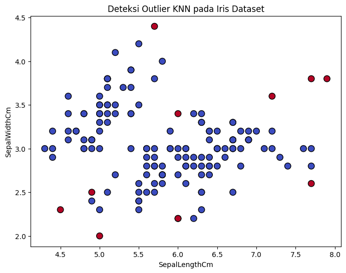
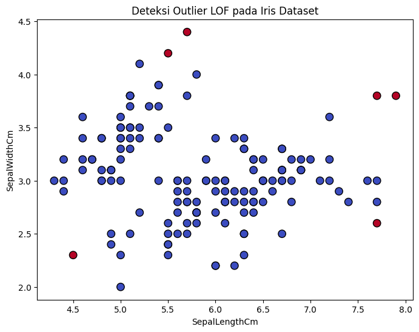

Data Understanding#
Mencari Outlier dengan Metode ABOD#
!pip install pyod
Requirement already satisfied: pyod in /home/codespace/.python/current/lib/python3.12/site-packages (2.0.5)
Requirement already satisfied: joblib in /home/codespace/.local/lib/python3.12/site-packages (from pyod) (1.5.1)
Requirement already satisfied: matplotlib in /home/codespace/.local/lib/python3.12/site-packages (from pyod) (3.10.3)
Requirement already satisfied: numpy>=1.19 in /home/codespace/.python/current/lib/python3.12/site-packages (from pyod) (2.2.6)
Requirement already satisfied: numba>=0.51 in /home/codespace/.python/current/lib/python3.12/site-packages (from pyod) (0.61.2)
Requirement already satisfied: scipy>=1.5.1 in /home/codespace/.local/lib/python3.12/site-packages (from pyod) (1.16.0)
Requirement already satisfied: scikit-learn>=0.22.0 in /home/codespace/.local/lib/python3.12/site-packages (from pyod) (1.7.0)
Requirement already satisfied: llvmlite<0.45,>=0.44.0dev0 in /home/codespace/.python/current/lib/python3.12/site-packages (from numba>=0.51->pyod) (0.44.0)
Requirement already satisfied: threadpoolctl>=3.1.0 in /home/codespace/.local/lib/python3.12/site-packages (from scikit-learn>=0.22.0->pyod) (3.6.0)
Requirement already satisfied: contourpy>=1.0.1 in /home/codespace/.local/lib/python3.12/site-packages (from matplotlib->pyod) (1.3.2)
Requirement already satisfied: cycler>=0.10 in /home/codespace/.local/lib/python3.12/site-packages (from matplotlib->pyod) (0.12.1)
Requirement already satisfied: fonttools>=4.22.0 in /home/codespace/.local/lib/python3.12/site-packages (from matplotlib->pyod) (4.58.5)
Requirement already satisfied: kiwisolver>=1.3.1 in /home/codespace/.local/lib/python3.12/site-packages (from matplotlib->pyod) (1.4.8)
Requirement already satisfied: packaging>=20.0 in /home/codespace/.local/lib/python3.12/site-packages (from matplotlib->pyod) (25.0)
Requirement already satisfied: pillow>=8 in /home/codespace/.local/lib/python3.12/site-packages (from matplotlib->pyod) (11.3.0)
Requirement already satisfied: pyparsing>=2.3.1 in /home/codespace/.local/lib/python3.12/site-packages (from matplotlib->pyod) (3.2.3)
Requirement already satisfied: python-dateutil>=2.7 in /home/codespace/.local/lib/python3.12/site-packages (from matplotlib->pyod) (2.9.0.post0)
Requirement already satisfied: six>=1.5 in /home/codespace/.local/lib/python3.12/site-packages (from python-dateutil>=2.7->matplotlib->pyod) (1.17.0)
# Import library
import pandas as pd
import matplotlib.pyplot as plt
from pyod.models.abod import ABOD
from sklearn.preprocessing import StandardScaler
# Baca dataset
df = pd.read_csv("Iris (1).csv")
print("🔹 Data Awal:")
print(df.head())
# hapus kolom Id dan Species karena bukan termasuk numerik
X = df.drop(columns=['Id', 'Species'])
# Normalisasi data agar skala sama
scaler = StandardScaler()
X_scaled = scaler.fit_transform(X)
# Inisialisasi ABOD dengan contamination (asumsi outlier yang diinginkan)
abod = ABOD(contamination=0.1) # 10% diasumsikan outlier
abod.fit(X_scaled)
# Prediksi outlier
df['Outlier'] = abod.predict(X_scaled) # 0 = normal, 1 = outlier
df['Outlier_Score'] = abod.decision_function(X_scaled)
print("\n🔹 Data dengan label outlier:")
print(df[df['Outlier'] == 1].to_string())
# Statistik jumlah outlier per kelas
print("\n🔹 Jumlah outlier per species:")
print(df.groupby('Species')['Outlier'].sum())
# Visualisasi (contoh: SepalLengthCm vs SepalWidthCm)
plt.figure(figsize=(8,6))
plt.scatter(df['SepalLengthCm'], df['SepalWidthCm'],
c=df['Outlier'], cmap='coolwarm', edgecolor='k', s=80)
plt.xlabel("SepalLengthCm")
plt.ylabel("SepalWidthCm")
plt.title("Deteksi Outlier ABOD pada Iris Dataset")
plt.show()
---------------------------------------------------------------------------
FileNotFoundError Traceback (most recent call last)
Cell In[2], line 8
5 from sklearn.preprocessing import StandardScaler
7 # Baca dataset
----> 8 df = pd.read_csv("Iris (1).csv")
9 print("🔹 Data Awal:")
10 print(df.head())
File ~/.local/lib/python3.12/site-packages/pandas/io/parsers/readers.py:1026, in read_csv(filepath_or_buffer, sep, delimiter, header, names, index_col, usecols, dtype, engine, converters, true_values, false_values, skipinitialspace, skiprows, skipfooter, nrows, na_values, keep_default_na, na_filter, verbose, skip_blank_lines, parse_dates, infer_datetime_format, keep_date_col, date_parser, date_format, dayfirst, cache_dates, iterator, chunksize, compression, thousands, decimal, lineterminator, quotechar, quoting, doublequote, escapechar, comment, encoding, encoding_errors, dialect, on_bad_lines, delim_whitespace, low_memory, memory_map, float_precision, storage_options, dtype_backend)
1013 kwds_defaults = _refine_defaults_read(
1014 dialect,
1015 delimiter,
(...) 1022 dtype_backend=dtype_backend,
1023 )
1024 kwds.update(kwds_defaults)
-> 1026 return _read(filepath_or_buffer, kwds)
File ~/.local/lib/python3.12/site-packages/pandas/io/parsers/readers.py:620, in _read(filepath_or_buffer, kwds)
617 _validate_names(kwds.get("names", None))
619 # Create the parser.
--> 620 parser = TextFileReader(filepath_or_buffer, **kwds)
622 if chunksize or iterator:
623 return parser
File ~/.local/lib/python3.12/site-packages/pandas/io/parsers/readers.py:1620, in TextFileReader.__init__(self, f, engine, **kwds)
1617 self.options["has_index_names"] = kwds["has_index_names"]
1619 self.handles: IOHandles | None = None
-> 1620 self._engine = self._make_engine(f, self.engine)
File ~/.local/lib/python3.12/site-packages/pandas/io/parsers/readers.py:1880, in TextFileReader._make_engine(self, f, engine)
1878 if "b" not in mode:
1879 mode += "b"
-> 1880 self.handles = get_handle(
1881 f,
1882 mode,
1883 encoding=self.options.get("encoding", None),
1884 compression=self.options.get("compression", None),
1885 memory_map=self.options.get("memory_map", False),
1886 is_text=is_text,
1887 errors=self.options.get("encoding_errors", "strict"),
1888 storage_options=self.options.get("storage_options", None),
1889 )
1890 assert self.handles is not None
1891 f = self.handles.handle
File ~/.local/lib/python3.12/site-packages/pandas/io/common.py:873, in get_handle(path_or_buf, mode, encoding, compression, memory_map, is_text, errors, storage_options)
868 elif isinstance(handle, str):
869 # Check whether the filename is to be opened in binary mode.
870 # Binary mode does not support 'encoding' and 'newline'.
871 if ioargs.encoding and "b" not in ioargs.mode:
872 # Encoding
--> 873 handle = open(
874 handle,
875 ioargs.mode,
876 encoding=ioargs.encoding,
877 errors=errors,
878 newline="",
879 )
880 else:
881 # Binary mode
882 handle = open(handle, ioargs.mode)
FileNotFoundError: [Errno 2] No such file or directory: 'Iris (1).csv'
Mencari Outlier dengan Metode K-Nearest Neighbors (KNN)#
# Import library
import pandas as pd
import matplotlib.pyplot as plt
from pyod.models.knn import KNN
from sklearn.preprocessing import StandardScaler
# Baca dataset
df = pd.read_csv("Iris (1).csv")
print("🔹 Data Awal:")
print(df.head())
# Pilih fitur numerik (hapus kolom Id dan Species)
X = df.drop(columns=['Id', 'Species'])
# Normalisasi data agar skala sama
scaler = StandardScaler()
X_scaled = scaler.fit_transform(X)
# Inisialisasi KNN
knn_model = KNN(contamination=0.1) # 10% diasumsikan outlier
knn_model.fit(X_scaled)
# Prediksi outlier
df['Outlier'] = knn_model.predict(X_scaled) # 0 = normal, 1 = outlier
df['Outlier_Score'] = knn_model.decision_function(X_scaled)
print("\n🔹 Data dengan label outlier:")
print(df[df['Outlier'] == 1].to_string())
# Statistik jumlah outlier per kelas
print("\n🔹 Jumlah outlier per species:")
print(df.groupby('Species')['Outlier'].sum())
# Visualisasi (SepalLengthCm vs SepalWidthCm)
plt.figure(figsize=(8,6))
plt.scatter(df['SepalLengthCm'], df['SepalWidthCm'],
c=df['Outlier'], cmap='coolwarm', edgecolor='k', s=80)
plt.xlabel("SepalLengthCm")
plt.ylabel("SepalWidthCm")
plt.title("Deteksi Outlier KNN pada Iris Dataset")
plt.show()
🔹 Data Awal:
Id SepalLengthCm SepalWidthCm PetalLengthCm PetalWidthCm Species
0 1 5.1 3.5 1.4 0.2 Iris-setosa
1 2 4.9 3.0 1.4 0.2 Iris-setosa
2 3 4.7 3.2 1.3 0.2 Iris-setosa
3 4 4.6 3.1 1.5 0.2 Iris-setosa
4 5 5.0 3.6 1.4 0.2 Iris-setosa
🔹 Data dengan label outlier:
Id SepalLengthCm SepalWidthCm PetalLengthCm PetalWidthCm Species Outlier Outlier_Score
15 16 5.7 4.4 1.5 0.4 Iris-setosa 1 1.218094
41 42 4.5 2.3 1.3 0.3 Iris-setosa 1 1.629658
60 61 5.0 2.0 3.5 1.0 Iris-versicolor 1 1.112085
85 86 6.0 3.4 4.5 1.6 Iris-versicolor 1 0.958033
106 107 4.9 2.5 4.5 1.7 Iris-virginica 1 1.048873
109 110 7.2 3.6 6.1 2.5 Iris-virginica 1 1.083392
117 118 7.7 3.8 6.7 2.2 Iris-virginica 1 1.774121
118 119 7.7 2.6 6.9 2.3 Iris-virginica 1 1.031365
119 120 6.0 2.2 5.0 1.5 Iris-virginica 1 0.869195
131 132 7.9 3.8 6.4 2.0 Iris-virginica 1 1.894567
🔹 Jumlah outlier per species:
Species
Iris-setosa 2
Iris-versicolor 2
Iris-virginica 6
Name: Outlier, dtype: int64

Mencari Outlier dengan Metode Local Outlier Factor (LOF)#
# Import library
import pandas as pd
import matplotlib.pyplot as plt
from pyod.models.lof import LOF
from sklearn.preprocessing import StandardScaler
# Baca dataset
df = pd.read_csv("Iris (1).csv")
print("🔹 Data Awal:")
print(df.head())
# Pilih fitur numerik (hapus kolom Id dan Species)
X = df.drop(columns=['Id', 'Species'])
# Normalisasi data agar skala sama
scaler = StandardScaler()
X_scaled = scaler.fit_transform(X)
# Inisialisasi LOF
lof_model = LOF(contamination=0.05, n_neighbors=20) # 5% diasumsikan outlier
lof_model.fit(X_scaled)
# Prediksi outlier
df['Outlier'] = lof_model.predict(X_scaled) # 0 = normal, 1 = outlier
df['Outlier_Score'] = lof_model.decision_function(X_scaled)
print("\n🔹 Data dengan label outlier:")
print(df[df['Outlier'] == 1].to_string())
# Statistik jumlah outlier per kelas
print("\n🔹 Jumlah outlier per species:")
print(df.groupby('Species')['Outlier'].sum())
# Visualisasi (SepalLengthCm vs SepalWidthCm)
plt.figure(figsize=(8,6))
plt.scatter(df['SepalLengthCm'], df['SepalWidthCm'],
c=df['Outlier'], cmap='coolwarm', edgecolor='k', s=80)
plt.xlabel("SepalLengthCm")
plt.ylabel("SepalWidthCm")
plt.title("Deteksi Outlier LOF pada Iris Dataset")
plt.show()
🔹 Data Awal:
Id SepalLengthCm SepalWidthCm PetalLengthCm PetalWidthCm Species
0 1 5.1 3.5 1.4 0.2 Iris-setosa
1 2 4.9 3.0 1.4 0.2 Iris-setosa
2 3 4.7 3.2 1.3 0.2 Iris-setosa
3 4 4.6 3.1 1.5 0.2 Iris-setosa
4 5 5.0 3.6 1.4 0.2 Iris-setosa
🔹 Data dengan label outlier:
Id SepalLengthCm SepalWidthCm PetalLengthCm PetalWidthCm Species Outlier Outlier_Score
15 16 5.7 4.4 1.5 0.4 Iris-setosa 1 1.958087
33 34 5.5 4.2 1.4 0.2 Iris-setosa 1 1.573389
41 42 4.5 2.3 1.3 0.3 Iris-setosa 1 1.891710
117 118 7.7 3.8 6.7 2.2 Iris-virginica 1 1.774957
118 119 7.7 2.6 6.9 2.3 Iris-virginica 1 1.558252
131 132 7.9 3.8 6.4 2.0 Iris-virginica 1 1.867041
🔹 Jumlah outlier per species:
Species
Iris-setosa 3
Iris-versicolor 0
Iris-virginica 3
Name: Outlier, dtype: int64
